-
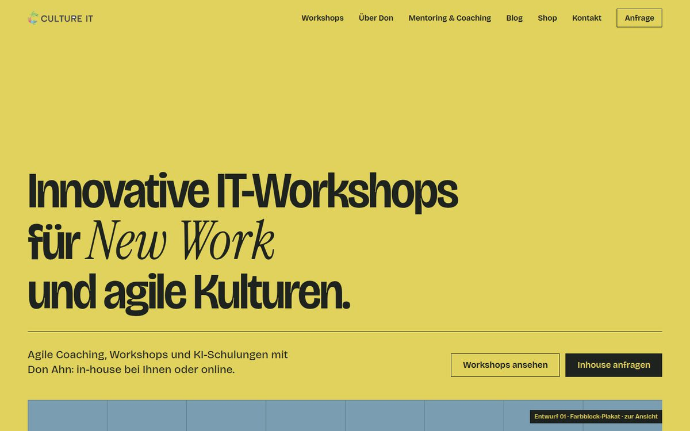
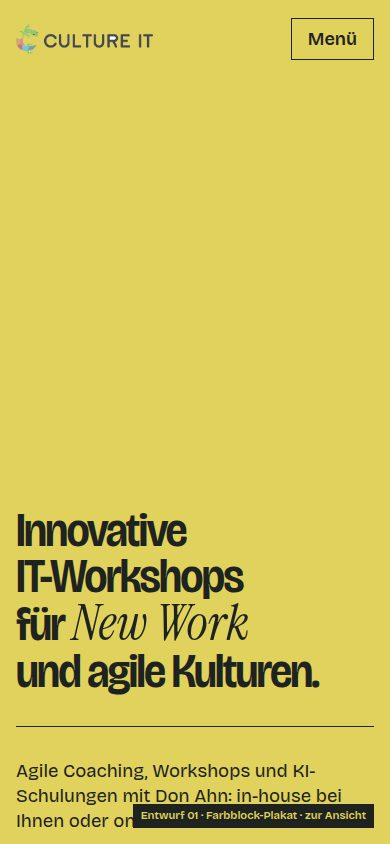
01 · Farbblock-Plakat Gelber Einstieg mit sehr enger, schwerer Grotesk und einem kursiven Serifenwort in dunkler Schrift; beim Scrollen wechselt die Hintergrundfarbe der Seite zwischen Gelb, Mint, Blau und Orange. -
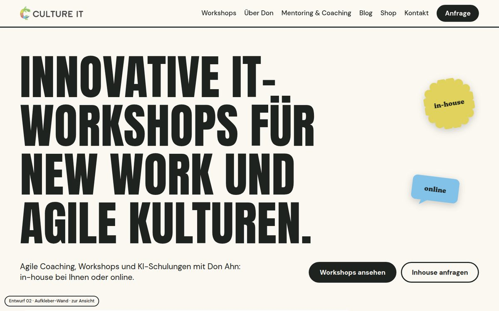
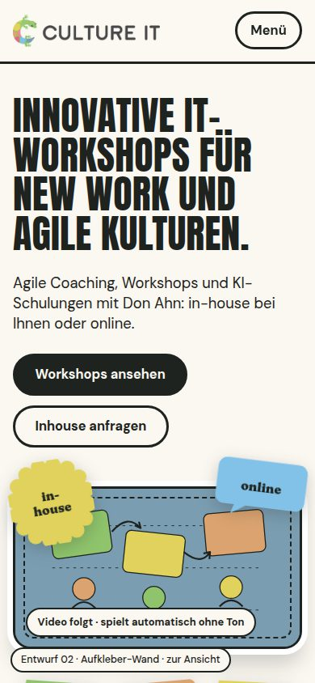
02 · Aufkleber-Wand Gebrochen weißer Grund, fette verdichtete Versalien in Schwarz und schräge Aufkleber in den Logofarben mit dicker Kontur, die beim Scrollen von oben auf die Wand fallen. -
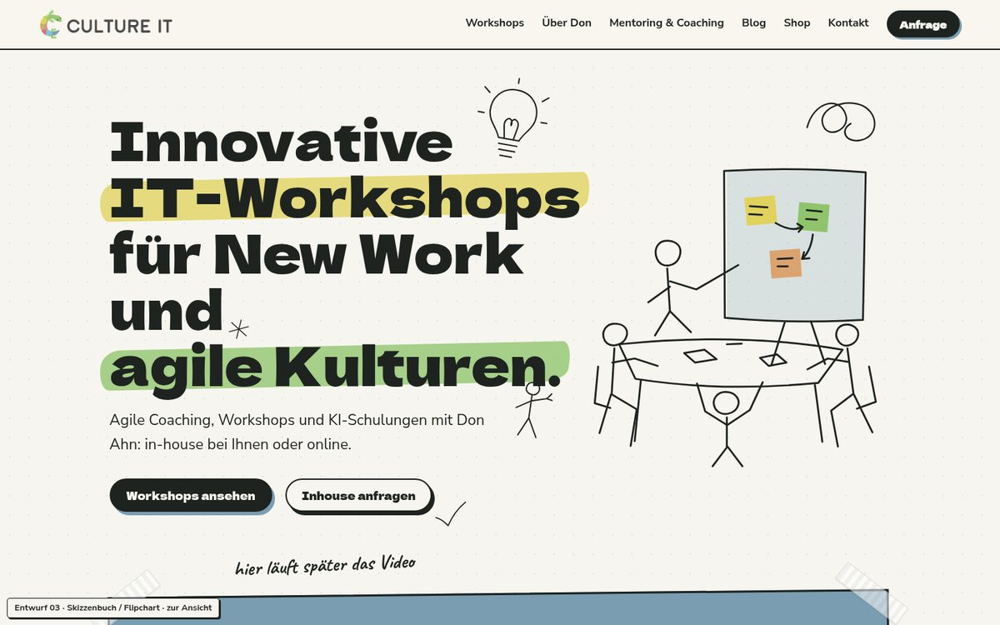
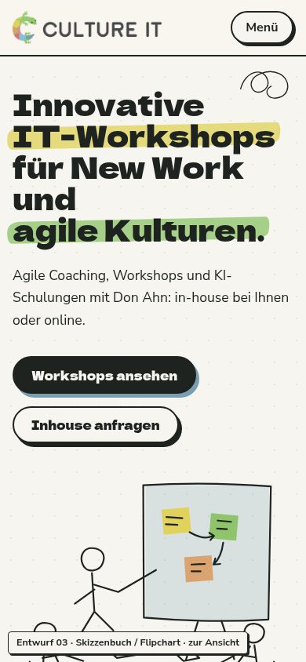
03 · Skizzenbuch Papiergrund wie ein Flipchart mit Strichzeichnungen in Tinte (Glühbirne, Strichmännchen, Flipchart), Textmarker-Strichen hinter Wörtern und bunten Haftnotizen; die Linien zeichnen sich beim Scrollen. -
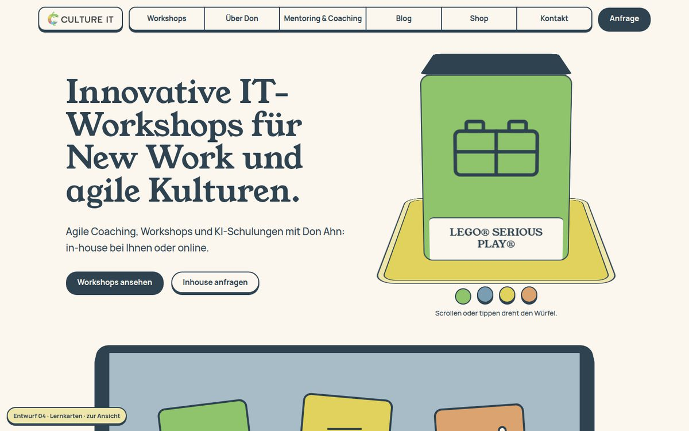
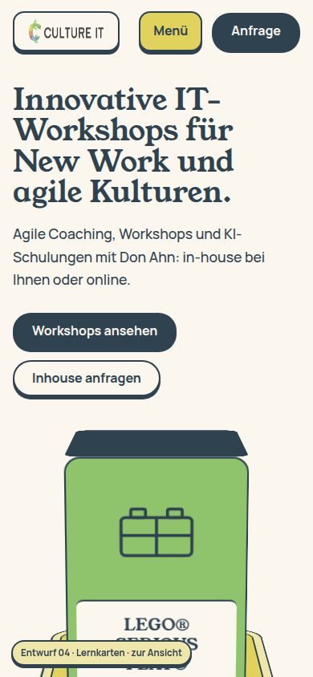
04 · Lernkarten Cremefarbener Grund und tiefblaue Schrift, dick umrandete Karten und Reiter in den Logofarben, im Einstieg ein drehbarer Würfel mit den Themen der Workshops; die Workshops sind aufklappbare Karten. -
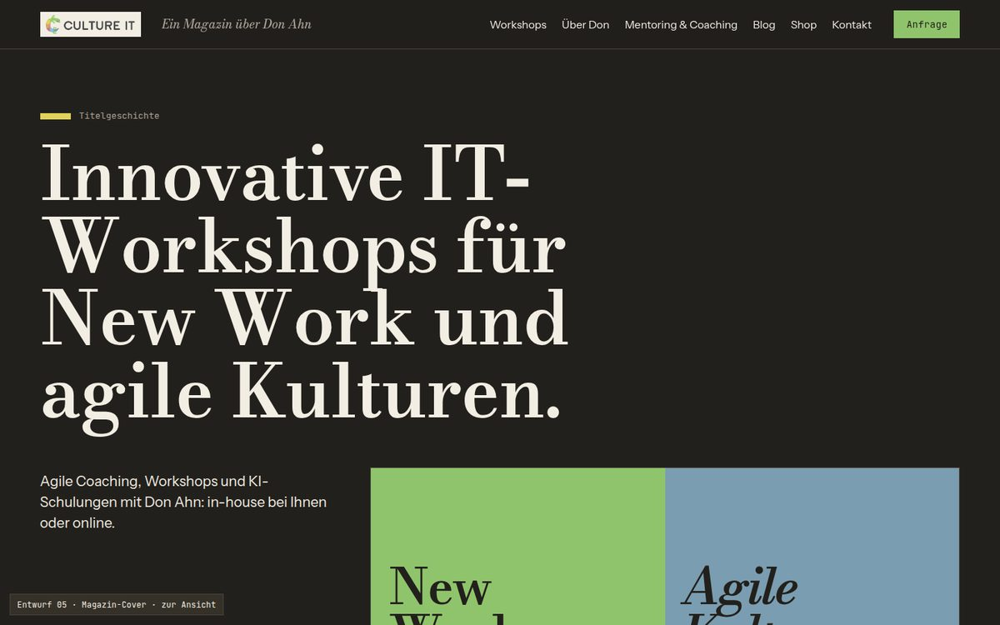
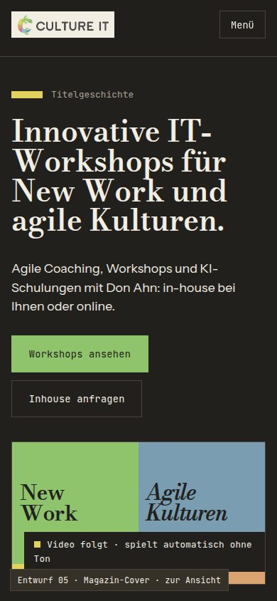
05 · Magazin-Cover Dunkler, warmer Grund mit hohen Serifen-Überschriften und Mono-Nummern; die Titelseiten der Bereiche sind Farbkarten in Mint, Orange, Gelb und Blau und laufen angeheftet waagerecht durch, wenn man nach unten scrollt. -
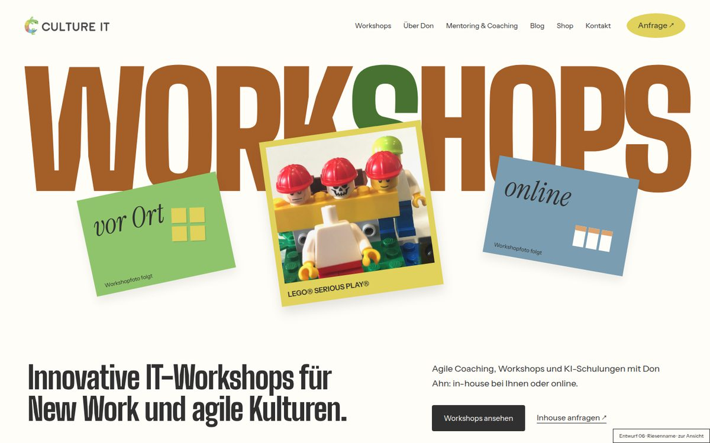
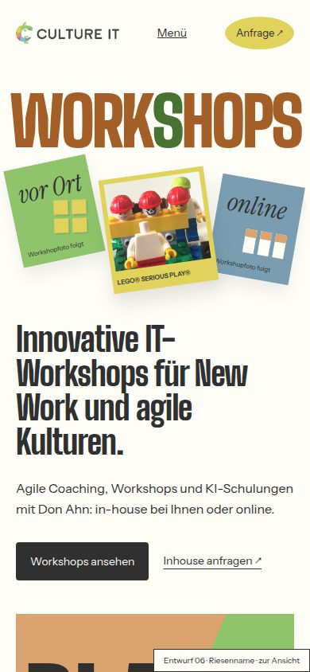
06 · Riesenname Heller Grund, das Wort „WORKSHOPS“ in riesigen, schmalen Versalien über die ganze Breite und davor schräge Karten in Gelb, Mint und Blau, die beim Scrollen auseinanderrücken. -
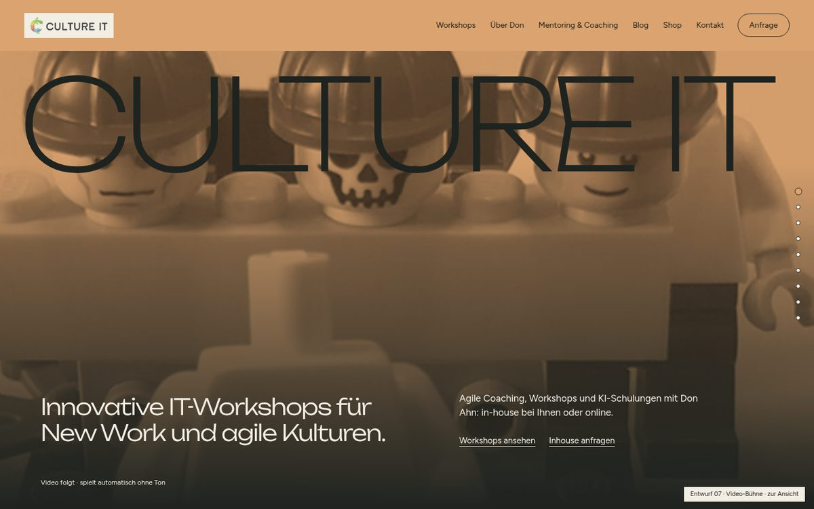
07 · Video-Bühne Der Video-Platzhalter füllt den ersten Bildschirm in orangem Duoton mit dünnem, sehr breitem Schriftzug; beim Scrollen schrumpft er leicht, danach folgen bildschirmhohe Kapitel auf dunklem und hellem Grund. -
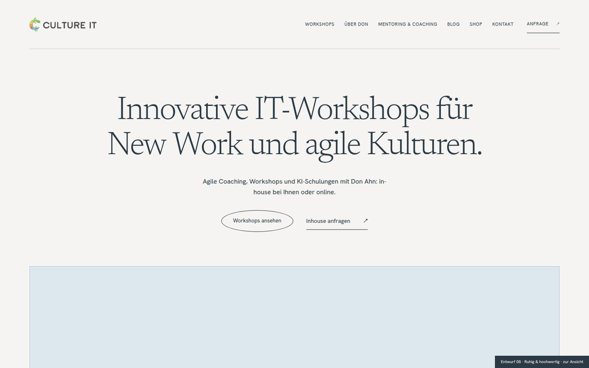
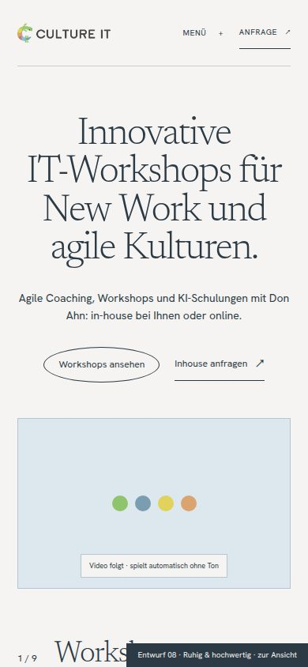
08 · Ruhig & hochwertig Viel Weißraum, große, ruhige Serifen-Sätze in Tiefblau, zentriert; feine Linien, kleine Versalien in der Navigation, Seitenzahlen wie „9 / 9“ und die Logofarben nur als kleine Punkte und Streifen. -
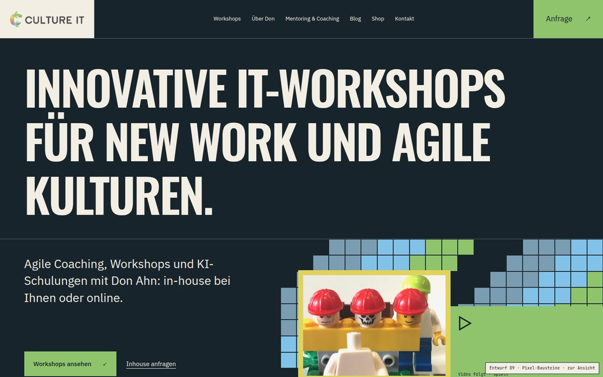
09 · Pixel-Bausteine Sehr dunkelblauer Grund mit kräftigen, verdichteten Versalien, Rastern aus Farbquadraten in Mint, Blau und Hellblau, die beim Scrollen die Farbe wechseln, Mono-Labels und einem Foto in dickem gelbem Rahmen. -
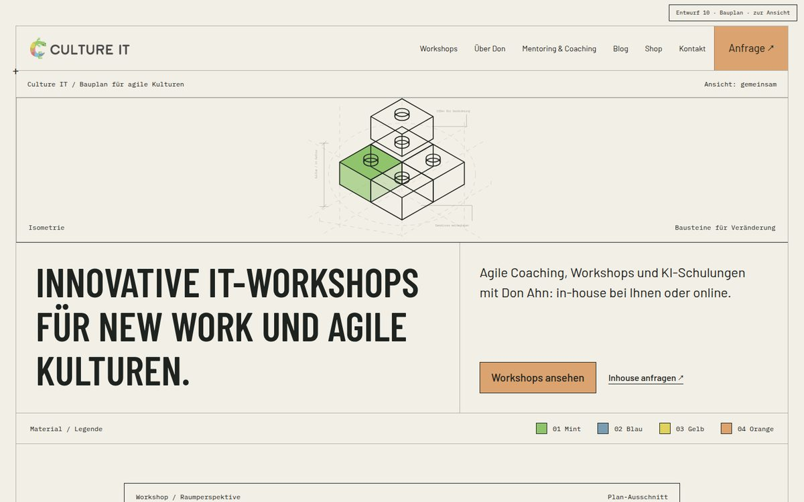
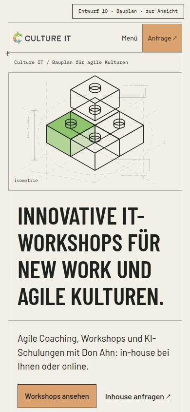
10 · Bauplan Papiergrund mit Linienzeichnungen eines Bausteinstapels, Plankopf, Maßlinien und Mono-Anmerkungen sowie einer Farblegende mit nummerierten Feldern; beim Scrollen füllen sich weitere Bausteine mit Farbe.
Zehn Entwürfe für die neue Startseite
Gleicher Inhalt, zehn Gestaltungsrichtungen. Ein Klick öffnet den Entwurf; Workshopfotos sind Platzhalter.
Entwurfsstand 06.11.2026 · nur zur Ansicht